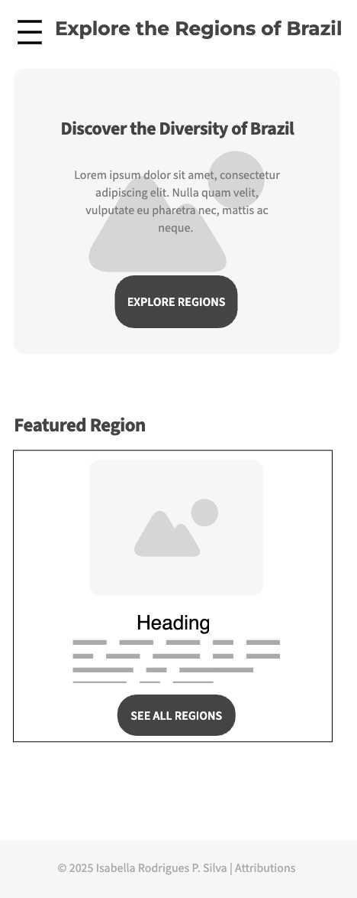
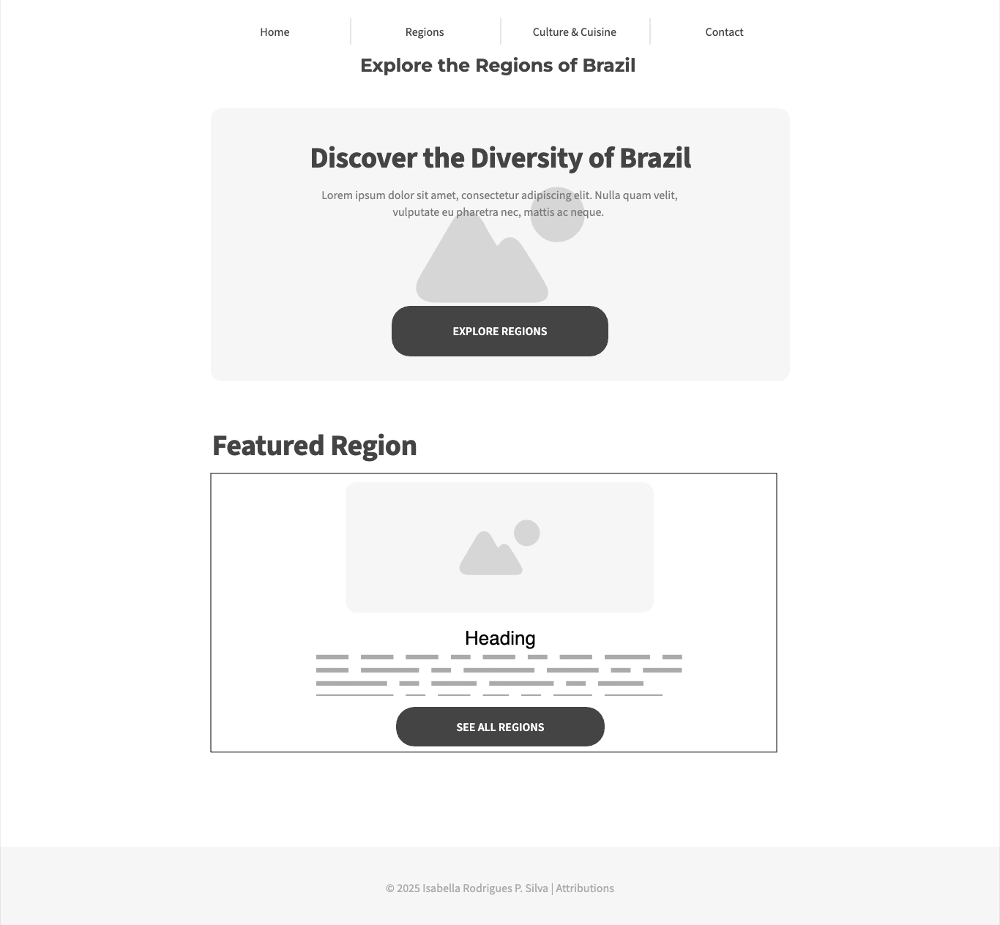

Site Name
Explore the Regions of Brazil
This name was chosen to clearly communicate the site's purpose: to help users discover and learn about the unique regions of Brazil. It is descriptive, memorable, and SEO-friendly.
Site Purpose
The site provides a comprehensive, interactive guide to Brazil's five major regions. It offers cultural, geographic, and culinary highlights, major cities, and attractions. Users can browse, filter, and explore regional data, view details in modals, and submit their own regional expertise via a form.
Scenarios
- What are the main cultural highlights and attractions of each region of Brazil?
- Which typical dishes are associated with the Northeast region?
- How do the main cities and biomes differ between the North and South?
- How can I share my own knowledge or experience about a specific region?
Color Schema
- Blue (#212a74): Used for main backgrounds, header/footer, and primary text.
- Yellow (#f7c600): Used for highlights, buttons, and accents.
- Green (#00571b): Used for headings, links, and call-to-action elements.
- White (#fff): Used for content backgrounds and contrast.
Typography
- Montserrat – Used for all headings (h1, h2, h3).
- Roboto – Used for body text, paragraphs, and navigation.
Example Heading (Montserrat)
Example body text (Roboto)
Wireframe
Mobile View
Desktop View
Wireframes are conceptual and may be adjusted as the project progresses.